Крым · Судак
Таинственный остров
Сцены на острове пиратов снимали недалеко от Судака, на скалистом побережье Крыма.
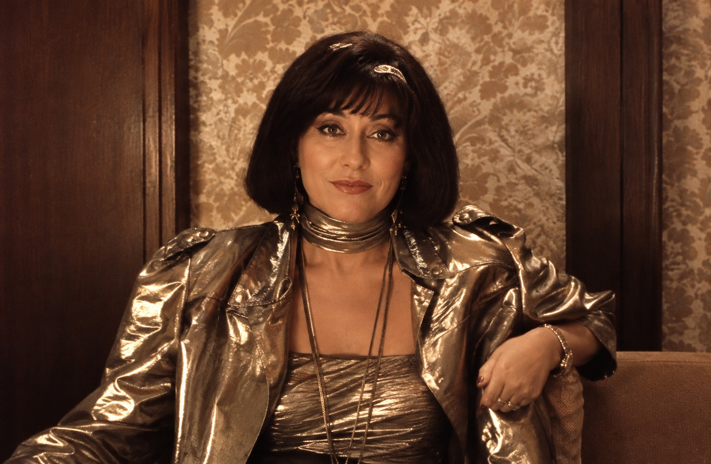
«Казахфильм» · 1986 · приключенческий боевик
Советский теплоход «Иван Бунин» идёт из Сиднея в Гонконг. Среди туристов на борту — неуловимая королева пиратов мадам Вонг, а по её следу идёт комиссар полиции, у которого пираты похитили внука.
О фильме
Советский теплоход «Иван Бунин» зафрахтовала зарубежная туристическая фирма. Лайнер идёт по Тихому океану по маршруту Сидней — Гонконг. В числе пассажиров оказывается глава крупного пиратского синдиката, неуловимая мадам Юлия Вонг, вместе со своими подручными.
Одновременно по следу синдиката идёт комиссар полиции Гонконга Томпсон. Он русский эмигрант, сын бывшего министра правительства Российской империи. Для него это дело личное: люди мадам Вонг похитили его внука. Чтобы вернуть мальчика, комиссару нужно срочно найти сокровища пиратов и обменять их на заложника.
В эту историю втягивается и экипаж теплохода, прежде всего моряк Булат. Его сыграл не профессиональный актёр, а боксёр Серик Конакбаев, серебряный призёр Олимпийских игр 1980 года. Голос герою подарил актёр Борис Щербаков.
Сценарий написал Станислав Говорухин. Изначально картину задумывали как продолжение знаменитых «Пиратов XX века» (1979). Главные роли снова должны были сыграть Николай Ерёменко-младший и Талгат Нигматулин, но сценарий им не понравился, и они отказались. Тогда историю переписали под новых героев и убрали все связи с «Пиратами».
В прокате 1986 года фильм занял пятое место: его посмотрели 30,1 миллиона зрителей. Повторить успех «Пиратов XX века» картине не удалось, но провалом её никто не назвал.
Галерея
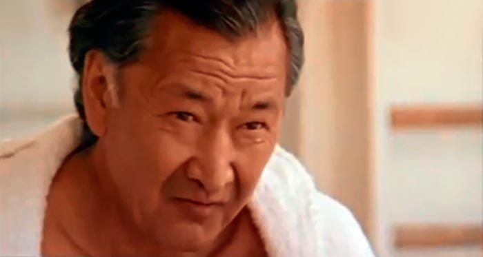
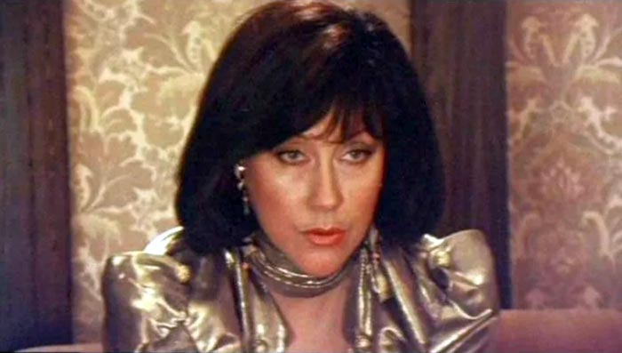
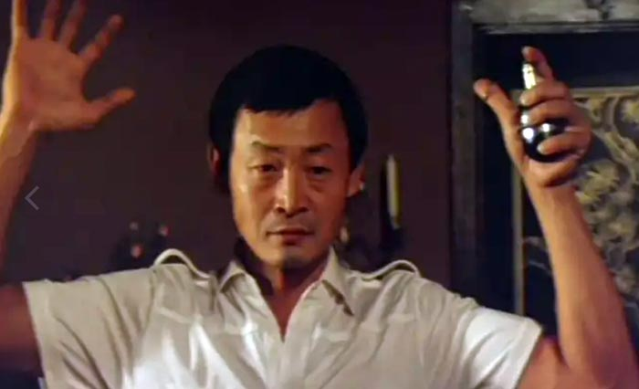
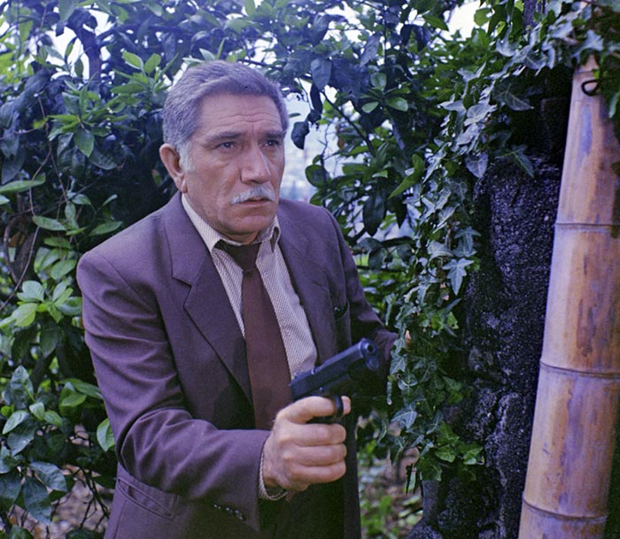
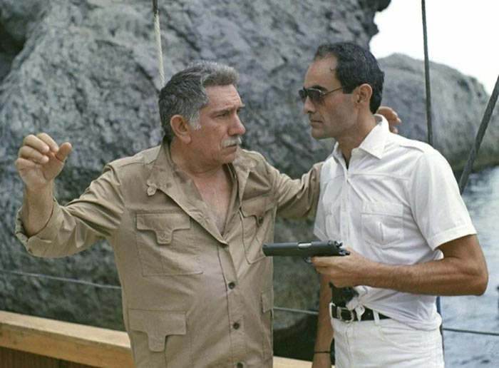
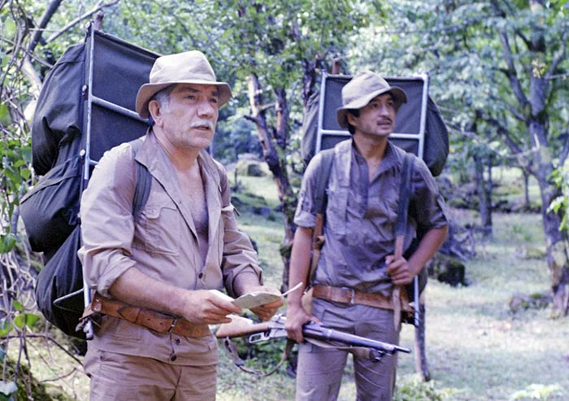
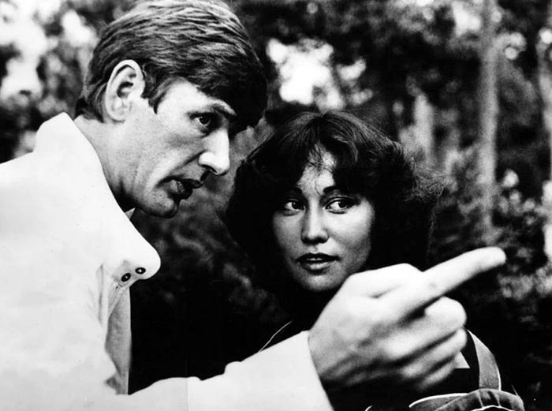
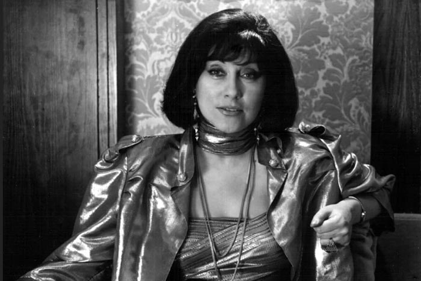
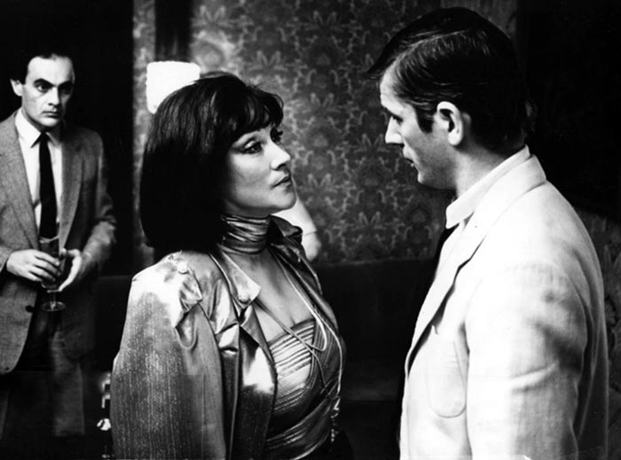
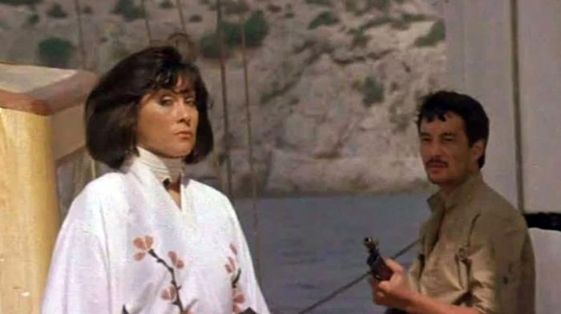
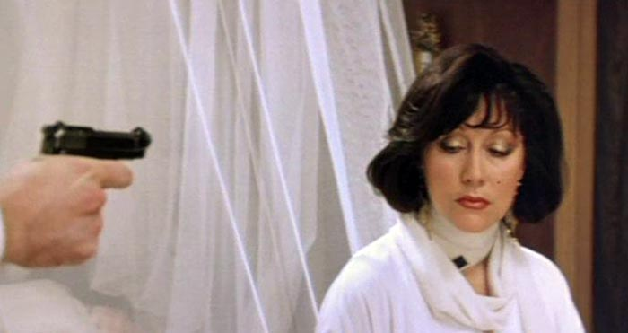
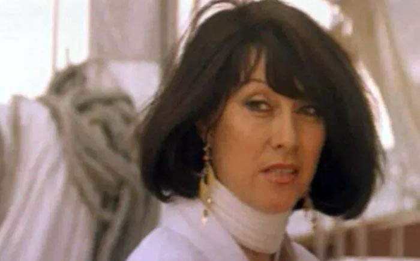
В ролях
В фильме снимались актёры со всего Союза: из России, Армении, Литвы, Казахстана, Узбекистана и Киргизии.
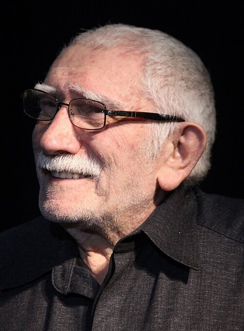
Томпсон, комиссар полиции Гонконга, русский эмигрант
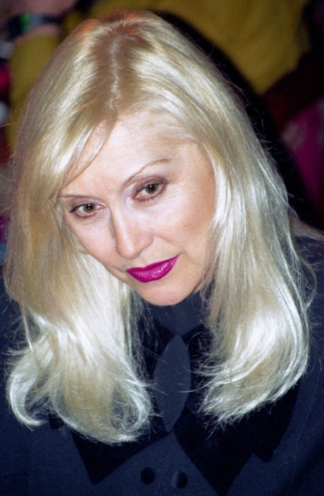
Мадам Юлия Вонг, глава синдиката пиратов
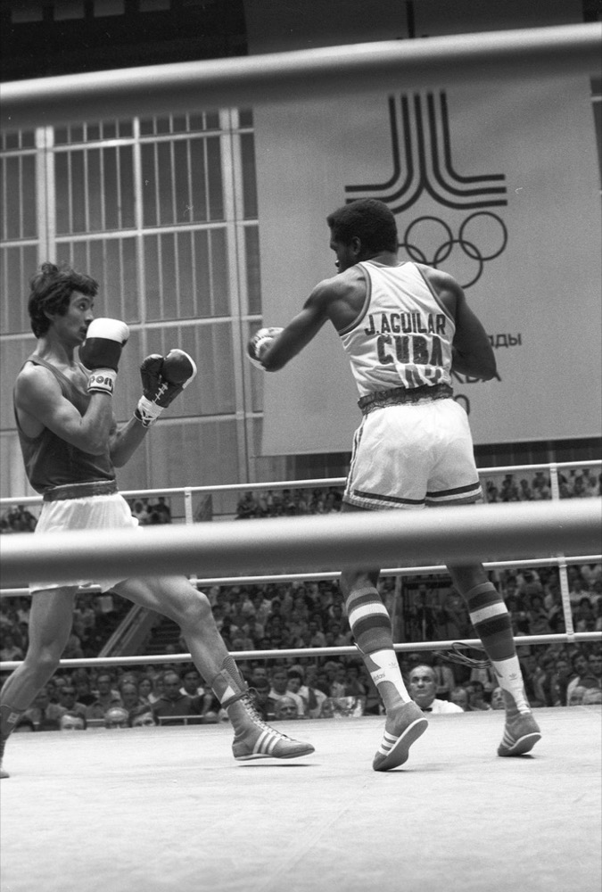
Булат, моряк теплохода «Иван Бунин». Олимпийский призёр по боксу
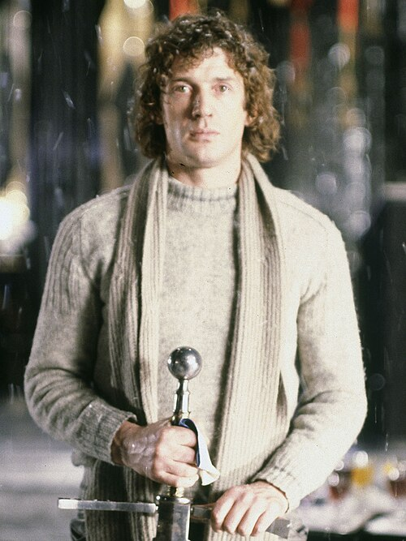
Доул, пират
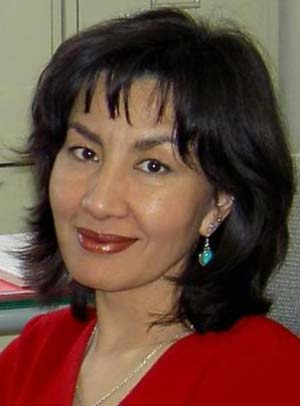
Тиоти, служанка и телохранитель мадам Вонг
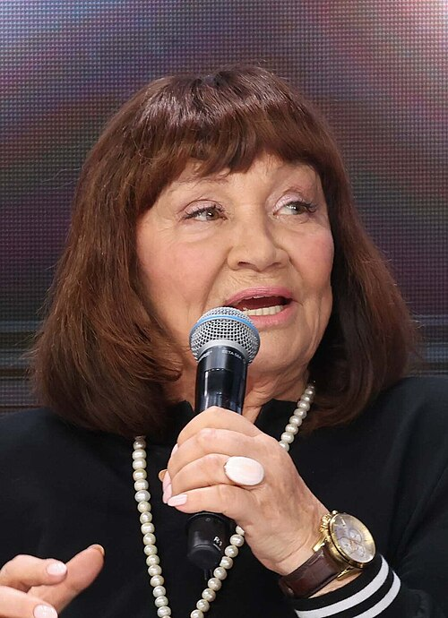
Фрау Шульц, директор круиза
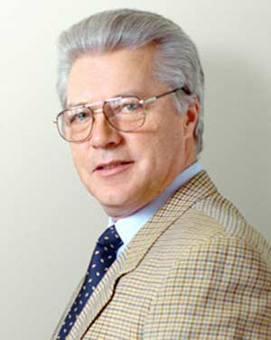
Капитан теплохода «Иван Бунин»
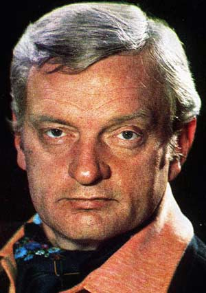
Стэн, начальник комиссара Томпсона
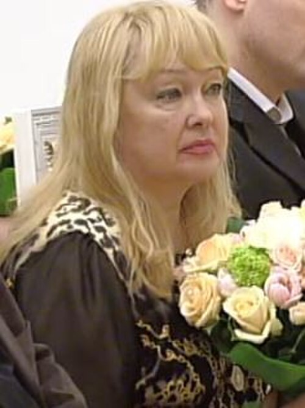
Бортпроводница теплохода «Иван Бунин»
За кадром
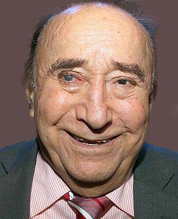
28.11.1927, Батуми — 15.10.2018, Москва · Народный артист России
Советский и российский кинорежиссёр, сценарист и актёр. Окончил ВГИК дважды: экономический факультет в 1950 году и режиссёрский в 1966-м, в мастерской Якова Сегеля. С 1950 по 1964 год работал директором картин на Киностудии имени Горького, а потом сам стал режиссёром этой студии.
Среди его работ много остросюжетного кино: «Повесть о чекисте», «Схватка», «Из жизни начальника уголовного розыска». «Тайны мадам Вонг» стали лидером проката 1986 года. Через пять лет он вернулся к морской теме в картине «Гангстеры в океане». Интересно, что режиссёр родился в Батуми, а именно там снимали «джунгли» для этого фильма.
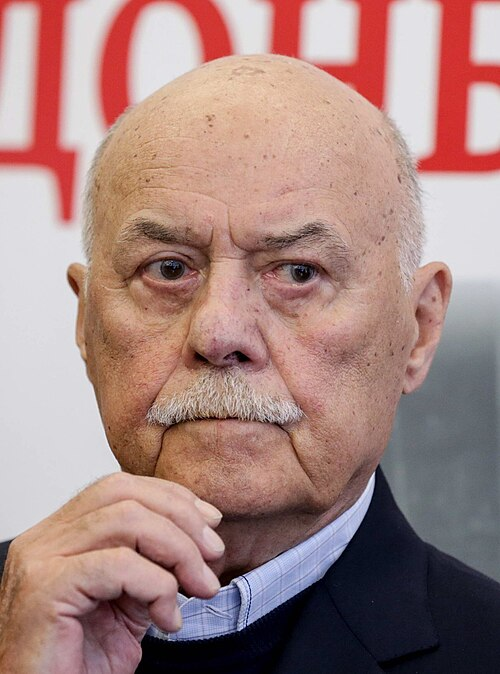
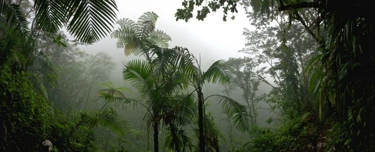
Место съёмок
По сюжету действие идёт в Тихом океане и в Гонконге. Съёмочную группу за границу не выпустили, поэтому Азию «сыграли» Крым и Грузия.
Крым · Судак
Сцены на острове пиратов снимали недалеко от Судака, на скалистом побережье Крыма.
Грузия · Батуми
Роль тропических джунглей досталась Батумскому ботаническому саду с его субтропическими растениями.
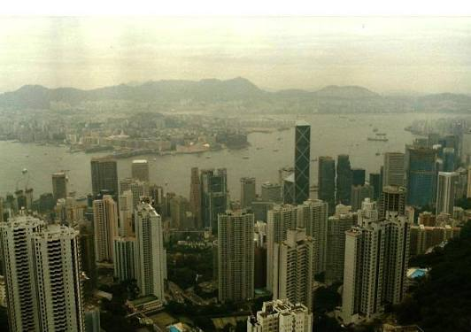
Гонконг
В фильме есть настоящие съёмки Гонконга, но саму съёмочную группу в Гонконг не выпустили.
Помощь съёмочной группе оказало Черноморское морское пароходство: оно предоставило для съёмок свои корабли.
Видео
Официального трейлера в открытом доступе нет. Зато на YouTube есть весь фильм в восстановленном качестве Full HD.